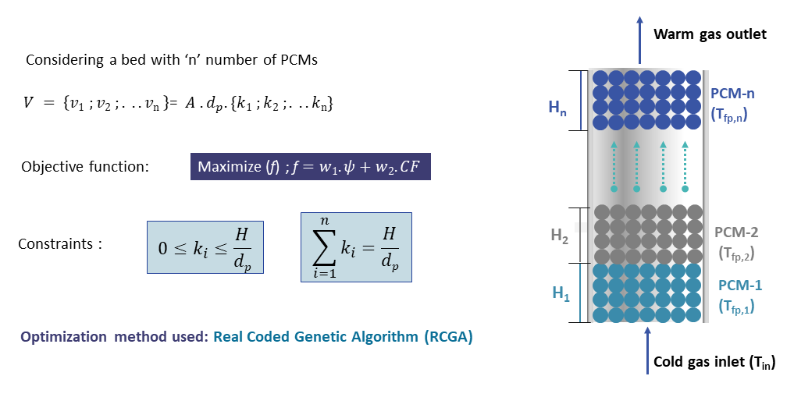

Optimization of the layer heights in a cascaded PCM based PB-CERS
Conference : ASME International Mechanical Engineering Congress and Exposition, 2024
Venue : Portland, OR, United States of America
Abstract: A packed bed system comprising a cascade of phase change materials have been shown to enhance the energy storage performance, which is dictated by the type of PCM, number of PCM layers, volume of each layer amongst others. Some parametric studies to assess the effects of these factors for high temperature energy storage have been reported; however, no guidelines on the optimal design of the packed bed system is available. In this paper, we present a theoretical framework using genetic algorithm to optimize the height of each cascade stage of a packed bed for cryogenic energy storage. The objective for optimization was set as the maximization of the bed utilization and the second law efficiency. The optimization was done based on the bed temperature profiles obtained from a heat transfer model. We implemented this framework to a three-layered packed bed to store the cryogenic energy from an incoming air stream at 100K. The optimized dimension of the packed bed system has a utilization factor of 0.975 and exergy efficiency of 58%. The results show that the developed framework may be extended to optimize the design of large scale cascaded cryogenic packed bed energy storage systems.

Methodology: The optimization of the layer heights in a cascaded PCM based PB-CERS was performed using a genetic algorithm. The objective function was defined to maximize the bed utilization and second law efficiency. The heat transfer model provided temperature profiles for each layer, which were used to evaluate the performance of different configurations. The genetic algorithm iteratively adjusted the heights of the PCM layers, selecting for configurations that improved the objective function. This process continued until convergence was achieved, resulting in an optimized design for the packed bed system. (Read Publication)